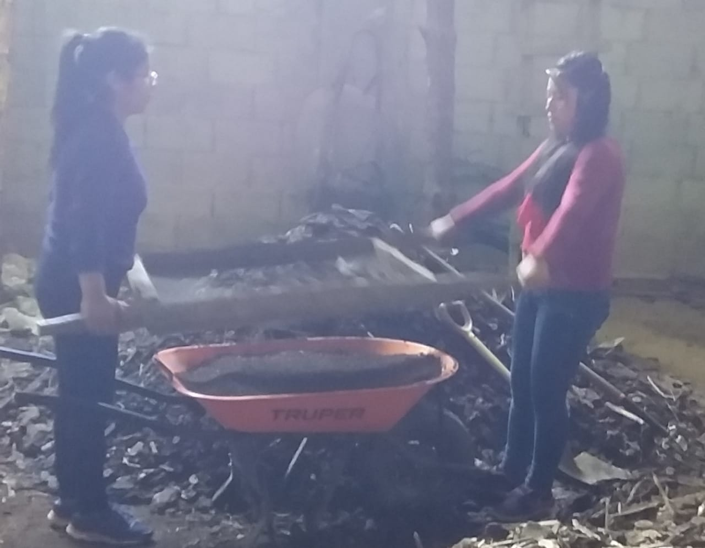
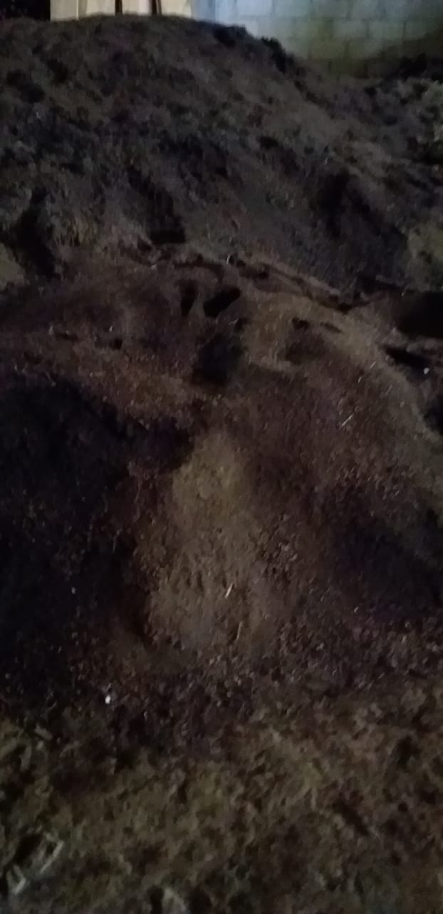

Abono orgánico es el término usado para referirse a la mezcla de materiales que
se obtienen de la degradación y mineralización de residuos orgánicos de origen animal (estiércoles), vegetal (restos
de cosechas) y restos leñosos e industriales (lodos de depuradoras) que se aplican a los suelos con el propósito de
mejorar sus características químicas, físicas y biológicas, ya que aportan nutrientes que activan e incrementan la
actividad microbiana de la tierra, son ricos en materia orgánica, energía y microorganismos y bajos en elementos
inorgánicos.
| 
|
El abono orgánico está elaborado por elementos totalmente biodegradables.
Ejemplo de estos compuestos son estiércol de los animales domésticos (borrego, gallinas, burros etc.), los residuos de alimentos e origen vegetal; y la “lombriz californiana” es uno de los factores más importantes para que los elementos anteriores den origen a la lombricomposta.

¿Importancia del obono organico?El abono orgánico mejora la estructura y textura del suelo, haciendo más ligeros a los suelos arcillosos y más compacto a los arenosos.
Mejora la permeabilidad del suelo ya que influyen en el drenaje y aireación de este.
Disminuye la erosión del suelo, tanto de agua como viento.

|
|